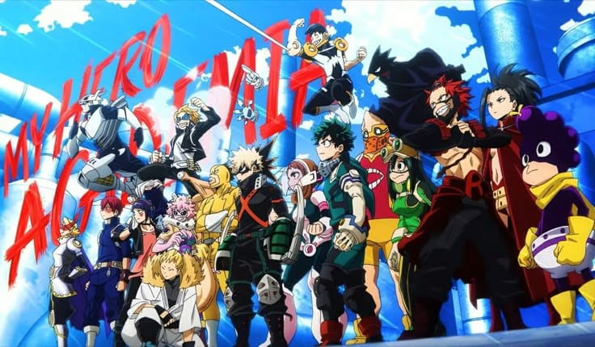
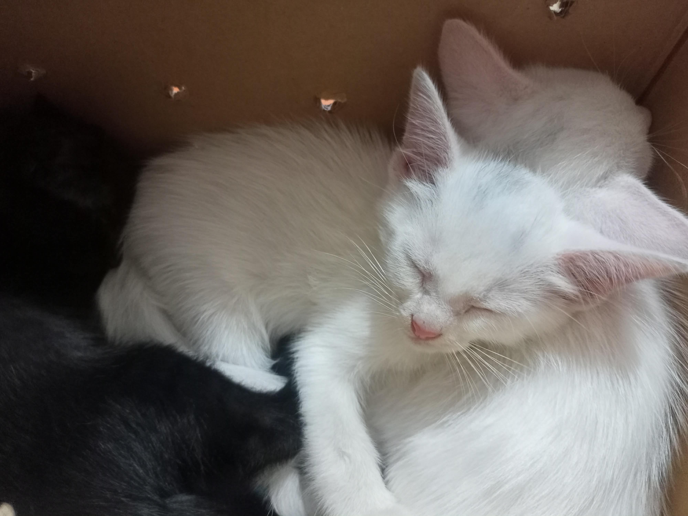
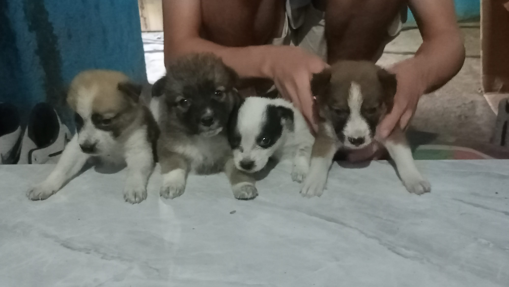
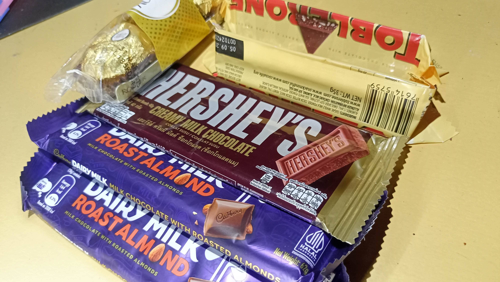

![]()
Claire-ly All About Me
✨Finding my place, at my own pace.✨
Hello! I'm Claire,
a first-year Computer Science student at Bicol University. I believe that I am someone who always tries her best despite all the doubts she has for herself. To get to know me Claire-ly, have fun exploring my zine! 💗
About Me

Everyone knows me as a person who loves pink—I bet you already figured that out the moment you opened this page. I actually don't have that many interests, which is a little sad (at least for me), considering I wasn't really exposed to a lot of things at an early age. However, I do like watching anime, specifically Battle Shōnen or simply action. Dare I say, I was influenced by my four brothers who are anime enthusiasts.
I also spend a lot of time reading fiction—my first love. Whether it's rom-com, action, or mystery, I can finish a book in one sitting. That's just how much I love reading. Aside from books and anime, I also have a huge sweet tooth—you can easily bribe me with sweets.

People often mistake me for someone who is masungit because my brows tend to furrow unintentionally, giving me an intimidating first impression. And yes, my brows are furrowed as I type this. Also yes, my brows might be furrowed as you read this. But I am not masungit at all, I am actually quite the opposite.

I laugh a lot, smile a lot, a crybaby, and I describe myself as loving and kindhearted. I am very shy, although people often say that I don't look like it because of my strong aura. However, if you get to know me, you'll realize that I don't really talk much. I prefer listening and just observing rather than being the center of attention.

How ironic is it that I am too shy to approach a counter to place an order for myself (my friends usually do it for me hehe) but can handle speaking in front of a crowd when it comes to academics. I guess that's how serious I am about my studies.

I've always set high standards for myself when it comes to academics because I truly believed that this was the only thing I was good at, so I made it a priority to excel in it. But things have become more challenging this time. Adjusting to a field I never expected to be in has never been easy. But I will not let this stop me from achieving my goals. I am trying my best to find out my strengths and weaknesses within the field, hoping to find my place and grow along the way.
My Path Into Computing
Being a Computer Science student was not initially something I envisioned for myself as I really didn't have an interest in the field of computing. I passed a different program at Bicol University, but unfortunately, it was not accredited by the scholarship I got into. Because of this, I decided to apply for Computer Science instead. It was a risk either way, but I couldn't ignore the reality of our situation—I knew I had to consider the opportunities available to me, so I chose the scholarship. It was definitely an unexpected path for me, as Computer Science was far from my expertise and interests. However, as time went by, I slowly became fascinated with the field. I'm still getting used to it, but I'm trying my best to positively take on the course and discover everything it has to offer.

My First Step Toward Entering Bicol University
I was very happy when I found out I had passed, especially knowing that only 40 students are accepted each year for this program.

An Unexpected Turn
Receiving this scholarship is something I never expected. This was when I had to make one of the biggest decisions: pursue dentistry or take the scholarship opportunity.

A Hope Unfulfilled
After giving it a lot of thought, I decided to accept the scholarship and give up my slot in Dentistry. I then tried my luck through the below-quota qualifying examinations, but unfortunately, I wasn't accepted into either of the two programs I applied for because I wasn't among their priority applicants.

My Last Hope
With this being my last resort, I was still hoping that there would be an available slot for me even though the screening for BQ applicants already ended. After sharing my situation at the office, they handed me this slip of paper with contact details to reach out to so I did.

Where Things Fell Back Into Place
Thank God, the heavy burden on my shoulders finally began to lift when I received this email. It had been a painful and emotionally exhausting experience, one that I will never forget.

A New Journey
My very first group selfie with them. I may not have imagined myself taking this path, but I'm thrilled to see where this journey will lead me.
My Favorites
| Category | Preview | Title / Item | Anime |
 
|
My Hero Academia & Black Clover |
|---|---|---|
| Manhwa | 
|
Selfish Romance |
| Animal |
  |
cats & dogs |
| Color |  |
Wait—have I already mentioned that pink is my favorite color? 🤔 |
| Snack |  |
Chocolates |
| App |

|
Webtoon, TikTok, Roblox, and Spotify |
| Film Series | The Hunger Games |
My Goals
Academic
I want to genuinely become invested in the field of computing, survive my college years, and eventually graduate—hopefully with flying colors.
Personal Growth
Learn to be a little kinder to myself along the way through every challenge.
Dream Life & Future
I want to apply the skills and knowledge I learned in the university in the real-world, becoming successful so that I can repay my parents for all their sacrifices and live the life I have always dreamed of.
My Reflection
If I am going to compare last time's activity to this zine, I enjoyed this one more. The reasons are that it didn't just let me think of what I wanted my webpage to look like, but it also helped me rediscover who I am from my own perspective. Describing myself, looking back on my journey into computing, thinking of what my favorites are, and writing down my goals made it feel less like a graded requirement for others to read, but more like a personal project that I was building for myself.
I do think I improved in how I use images, animations, Flexbox, and styling. Using tools like Flexbox and interactive hover effects made my webpage much cleaner, more alive and fun to look at. It honestly took so much of time, trying to look for the right element, styling, and design —especially as a perfectionist who wants every detail to look just right. I did find it very stressful trying to figure out what's wrong and which needs to be changed or adjusted, but there is nothing more satisfying than seeing the final layout come together.
I know I still have a lot to learn in web design, and my page may not be the best, I am still genuinely proud of my work because of the visible improvements of my webpage. One thing is for sure, when I have spare time and not lazy, I would love to build more.